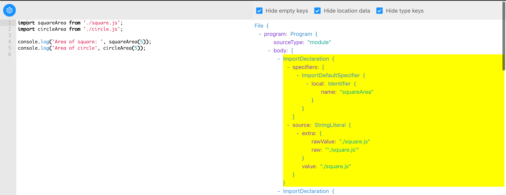

In my previous article, I explained how module bundler works. I used webpack and rollup as example, how each of them gave us a different perspective on how we can bundle our JavaScript application.
In this article, I am going to show you how I wrote my module bundler. The module bundler itself is not production-ready, yet I learned a ton through the exercise, and I am ever more appreciative of what modern module bundlers have provided.
⚠️ Warning: Tons of JavaScript code ahead. 🙈😱😨 ⚠️
Getting Started
I talked about the input (the JavaScript modules) and the output (the bundled JavaScript file) of a module bundler in my previous article. Now it's time to write a module bundler that takes in the input and produces the output.
A basic module bundler can be broken down into 2 parts:
- Understands the code and constructs the dependency graph (Dependency Resolution)
- Assembles the module into a single (or multiple) JavaScript file (Bundle)
A dependency graph is a graph representation of the dependency relationship between modules.
The Input
In this article, I will be using following files as my input to the bundler:
// filename: index.js
import squareArea from './square.js';
import circleArea from './circle.js';
console.log('Area of square: ', squareArea(5));
console.log('Area of circle', circleArea(5));
// filename: square.js
function area(side) {
return side * side;
}
export default area;
// filename: circle.js
const PI = 3.141;
function area(radius) {
return PI * radius * radius;
}
export default area;
I've created the project on Github, so if you are interested to try out yourself, you can clone it and checkout the fixture-1 tag. The input files are in the fixture/ folder.
Writing
I started with the main structure of the module bundler:
function build({ entryFile, outputFolder }) {
// build dependency graph
const graph = createDependencyGraph(entryFile);
// bundle the asset
const outputFiles = bundle(graph);
// write to output folder
for(const outputFile of outputFiles) {
fs.writeFileSync(
path.join(outputFolder, outputFile.name),
outputFile.content,
'utf-8'
)
}
}
The dependency graph is a directed graph, where the vertex is the module, and the directed edge is the dependency relationship between the modules.
function createDependencyGraph(entryFile) {
const rootModule = createModule(entryFile);
return rootModule;
}
So, the entry module is "the root" of the graph.
In createModule, I instantiate a new Module instance:
function createModule(filePath) {
return new Module(filePath);
}
The class Module will be used to record module properties, such as the content, the dependencies, exported keys, etc.
class Module {
constructor(filePath) {
this.filePath = filePath;
this.content = fs.readFileSync(filePath, 'utf-8');
this.dependencies = [];
}
}
While the content is the string content of the module, to understand what it actually means, I used babel to parse the content into AST (Abstract Syntax Tree):
// highlight-next-line
const babel = require('@babel/core');
class Module {
constructor(filePath) {
this.filePath = filePath;
this.content = fs.readFileSync(filePath, 'utf-8');
// highlight-next-line
this.ast = babel.parseSync(this.content);
}
}
Next, I need to find out the dependency of this module:
class Module {
constructor(filePath) {
this.filePath = filePath;
this.content = fs.readFileSync(filePath, 'utf-8');
this.ast = babel.parseSync(this.content);
// highlight-start
this.dependencies = this.findDependencies();
}
findDependencies() {
//
}
// highlight-end
}
So, how can I know what are the dependencies of this module?
I can look for the import statement from the AST with the help of the
babel-ast-explorer.

I found out that the import statement in the AST is called the ImportDeclaration. It has specifiers and source, which the source.value tells us what this module is importing from:
findDependencies() {
// highlight-start
return this.ast.program.body
.filter(node => node.type === 'ImportDeclaration')
.map(node => node.source.value)
// highlight-end
}
So I had the path that the module is requesting, but it could be relative to the current file, eg "./foo/bar", or from the node_modules, eg: "lodash". How do I know what is the actual file path that the module is requesting?
The step of figuring out the actual path based on the requested path, is called "Resolving":
findDependencies() {
return this.ast.program.body
.filter(node => node.type === 'ImportDeclaration')
.map(node => node.source.value)
// highlight-next-line
.map(relativePath => resolveRequest(this.filePath, relativePath))
}
// highlight-start
// resolving
function resolveRequest(requester, requestedPath) {
//
}
Resolving path to the actual file path
Resolving
Let's talk about resolving. We know that "import"ing ./b.js in the following examples will result in getting a different file, because when we specify ./, we are "import"ing relative to the current file.
// filename: project/a.js
import './b.js';
// filename: project/foo/a.js
import './b.js';
So, what are the rules of resolving a module?
The Node.js documentation has listed out the detailed step of the module resolving algorithm:
When we specify a relative path, ./b, Node.js will first assume that ./b is a file, and tries the following extension if it doesn't exactly match the file name:
b
b.js
b.json
b.node
If the file does not exist, Node.js will then try to treat ./b as a directory, and try the following:
"main" in b/package.json
b/index.js
b/index.json
b/index.node
If we specify import 'b' instead, Node.js will treat it as a package within node_modules/, and have a different resolving strategy.
Through the above illustration, we can see that resolving import './b' is not as simple as it seems. Besides the default Node.js resolving behaviour, webpack provides a lot more customisation options, such as custom extensions, alias, modules folders, etc.
Here, I am showing you the "simplest" resolver, which is to resolve relative path only:
const path = require('path');
// highlight-start
// resolving
function resolveRequest(requester, requestedPath) {
return path.join(path.dirname(requester), requestedPath);
}
**Note:** You should try out writing a full node resolvers that resolve relatively as well as absolutely from `node_modules/`
Now I know the actual requested file paths, I then create modules out of them.
findDependencies() {
return this.ast.program.body
.filter(node => node.type === 'ImportDeclaration')
.map(node => node.source.value)
.map(relativePath => resolveRequest(this.filePath, relativePath))
// highlight-next-line
.map(absolutePath => createModule(absolutePath))
}
So, for each module, I find their dependencies, parse them, and find each dependency's dependencies, parse them as well, and find their dependencies, and so forth recursively. At the end of the process, I get a module dependency graph that looks something like this:
Module {
filePath: '/Projects/byo-bundler/fixture/index.js',
content:
'import squareArea from './square.js';\nimport circleArea from './circle.js';\n\nconsole.log('Area of square: ', squareArea(5));\nconsole.log('Area of circle', circleArea(5));\n',
ast:
Node { /*...*/ },
dependencies:
[ Module {
filePath: '/Projects/byo-bundler/fixture/square.js',
content:
'function area(side) {\n return side * side;\n}\nexport default area;\n',
ast: Node {/* ... */},
dependencies: []
},
Module {
filePath: '/Projects/byo-bundler/fixture/circle.js',
content:
'const PI = 3.141;\nfunction area(radius) {\n return PI * radius * radius;\n}\nexport default area;\n',
ast: Node {/* ... */},
dependencies: []
}
]
}
The root of the graph is our entry module, and you can traverse the graph through the dependencies of the module. As you can see, the index.js has 2 dependencies, the square.js and the circle.js.
**Note:** If you are following along, you can checkout the tag `feat-1-module-dependency-graph`, to see the code that I had written up till this point.
Bundling
With the module dependency graph, it's time to bundle them into a file!
At this point in time, we can choose whether we want to bundle it in the "webpack way" or the "rollup way". In this article I am showing you how I did it the "webpack way". I'll write about bundling in the "rollup way" in the coming article.
If you have no idea about what is the "webpack way" or "rollup way", I have "coined" the term in my previous article and have detailed explanation about them!
Let's take a look how the final bundled file would look like:
const modules = {
'circle.js': function(exports, require) {
const PI = 3.141;
exports.default = function area(radius) {
return PI * radius * radius;
};
},
'square.js': function(exports, require) {
exports.default = function area(side) {
return side * side;
};
},
'app.js': function(exports, require) {
const squareArea = require('square.js').default;
const circleArea = require('circle.js').default;
console.log('Area of square: ', squareArea(5));
console.log('Area of circle', circleArea(5));
},
};
webpackStart({
modules,
entry: 'app.js',
});
Let's break it down to a few steps:
- Group modules into files
- Create the module map and wrapping each module in a "special" module factory function
- Create the "runtime", the glue that links each module together.
Grouping modules into files
This step is to decide which modules goes to which file. We can split modules into different files because of code splitting due to dynamic import as well as optimisation, such as the webpack's Chunk Splitting.
I will support code splitting in the future. For now, I grouped all modules into 1 file.
To collect all the modules from module graph into a list of modules, I did a graph traversal:
function bundle(graph) {
// highlight-next-line
collectModules(graph);
return [];
}
// highlight-start
function collectModules(graph) {
const modules = [];
collect(graph, modules);
return modules;
function collect(module, modules) {
modules.push(module);
module.dependencies.forEach(dependency => collect(dependency, modules));
}
}
...and I used the list of modules to create a module map.
Creating module map
The module map I created is a string, that would be inlined into the final bundle file.
I looped through each module, and used module.filePath as the key, and module.content as the value.
The reason I dont use JSON.stringify(moduleMap) instead of manually concatenating to build up the module map, is because JSON can only takes in JSON primitive data type as value, but what I built here is a JavaScript map, with function as value, but in string.
function bundle(graph) {
const modules = collectModules(graph);
// highlight-next-line
const moduleMap = toModuleMap(modules);
return [];
}
// highlight-start
function toModuleMap(modules) {
let moduleMap = '';
moduleMap += '{';
for (const module of modules) {
moduleMap += `"${module.filePath}": `;
moduleMap += `function(exports, require) { ${module.content} },`;
}
moduleMap += '}';
return moduleMap;
}
The function that wraps around the module.content is called the module factory function. It provides 2 parameter to the module:
exports, an object that the module can assign its exported value ontorequire, a function that the module can invoke with module path to import exported value from another module
The module map right now is not something that can be executed:
{
"index.js": function(exports, require) {
import squareArea from './square.js';
import circleArea from './circle.js';
console.log('Area of square: ', squareArea(5));
console.log('Area of circle', circleArea(5));
},
"square.js": function(exports, require) {
function area(side) {
return side * side;
}
export default area;
},
"circle.js": function(exports, require) {
const PI = 3.141;
function area(radius) {
return PI * radius * radius;
}
export default area;
},
}
because it still uses import and export. I had to transform them to use the exports and require that we pass in.
To transform the code, I used the AST of the module again: trasform the ast and generate the new code from the transformed ast.
What I need is to trasform the "from" to "to" of the following:
// #1
// from
import a, { b, c } from 'foo';
// to
const { default: a, b, c } = require('foo');
// #2
export default a;
export const b = 2;
export { c };
// to
exports.default = a;
exports.b = 2;
exports.c = c;
I wrote a step by step guide on how to write babel transformation, please do check it out.
Knowing what to target on AST and how the transformed AST look like, I wrote my transformation code:
for (const module of modules) {
// highlight-next-line
module.transformModuleInterface();
moduleMap += `"${module.filePath}": function(exports, require) { ${module.content} },`;
}
// ...
class Module {
// ...
// highlight-start
transformModuleInterface() {
const { ast, code } = babel.transformFromAstSync(this.ast, this.content, { ... });
this.ast = ast;
this.content = code;
}
// highlight-end
}
I omitted the actual babel transformation code, because it is lengthy. If you are interested to read about it, you can check out from my Github repo
So, now the module map looks ready:
{
"index.js": function(exports, require) {
const { default: squareArea } = require('square.js');
const { default: circleArea } = require('circle.js');
console.log('Area of square: ', squareArea(5));
console.log('Area of circle', circleArea(5));
},
"square.js": function(exports, require) {
function area(side) {
return side * side;
}
exports.default = area;
},
"circle.js": function(exports, require) {
const PI = 3.141;
function area(radius) {
return PI * radius * radius;
}
exports.default = area;
},
}
One thing to take note is that, for the require statements, I replaced the requested path to the actual resolved path, because I used the actual resolved path as the key to the module map.
Create the "runtime"
Now it's time to create the runtime. The runtime is a piece of code that is part of the output bundle, that runs when the application code is running, therefore, the runtime.
The runtime code can be from a template file, but for simplicity sake, I kept the runtime code as a string:
function bundle(graph) {
const modules = collectModules(graph);
const moduleMap = toModuleMap(modules);
// highlight-next-line
const moduleCode = addRuntime(moduleMap, modules[0].filePath);
return [];
}
// highlight-start
function addRuntime(moduleMap, entryPoint) {
return trim(`
const modules = ${moduleMap};
const entry = "${entryPoint}";
function webpackStart({ modules, entry }) {
const moduleCache = {};
const require = moduleName => {
// if in cache, return the cached version
if (moduleCache[moduleName]) {
return moduleCache[moduleName];
}
const exports = {};
// this will prevent infinite "require" loop
// from circular dependencies
moduleCache[moduleName] = exports;
// "require"-ing the module,
// exported stuff will assigned to "exports"
modules[moduleName](exports, require);
return moduleCache[moduleName];
};
// start the program
require(entry);
}
webpackStart({ modules, entry });`);
}
// trim away spaces before the line
function trim(str) {
const lines = str.split('\n').filter(Boolean);
const padLength = lines[0].length - lines[0].trimLeft().length;
const regex = new RegExp(`^\s{${padLength}}`);
return lines.map(line => line.replace(regex, '')).join('\n');
}
The code above is self explanatory, except if you have no idea what does the webpackStart() do, you can read more about it in my previous post.
Finally, I returned the module code from the bundle function:
function bundle(graph) {
const modules = collectModules(graph);
const moduleMap = toModuleMap(modules);
const moduleCode = addRuntime(moduleMap, modules[0].filePath);
// highlight-next-line
return [{ name: 'bundle.js', content: moduleCode }];
}
Now I run my bundler, it generates a output/bundle.js file. I run the generated file with node and I see:
Area of square: 25
Area of circle 78.525
That's it! A working module bundler!
Of course, the module bundler I've shown here is nowhere near webpack. Webpack supports more module system, resolving strategies, loading strategies, plugin system, optimisation, and many many more.
Optimisation
I played around my module bundler, and I quickly noticed a bug: Circular Dependency.
Here's my input files that I've tweaked:
// filename: index.js
import squareArea from './square.js';
import circleArea from './circle.js';
// highlight-next-line
export const PI = 3.141;
console.log('Area of square: ', squareArea(5));
console.log('Area of circle', circleArea(5));
// filename: circle.js
// highlight-start
// const PI = 3.141;
import { PI } from './index.js';
// highlight-end
function area(radius) {
return PI * radius * radius;
}
export default area;
When I ran it through my module bunlder, immediately it ran into a stack overflow:
RangeError: Maximum call stack size exceededCircular dependency
There were 2 junctures that the code did recursive traversal which have led to the endless loop:
- Generating dependency graphs
- Traversing module graph for bundling
// fixing circular dependencies when generating module graph
// highlight-next-line
const MODULE_CACHE = new Map();
function createModule(filePath) {
// highlight-next-line
if (!MODULE_CACHE.has(filePath)) {
const module = new Module(filePath);
// highlight-next-line
MODULE_CACHE.set(filePath, module);
// highlight-next-line
module.initDependencies();
}
// highlight-next-line
return MODULE_CACHE.get(filePath);
}
class Module {
...
// highlight-next-line
initDependencies() {
// highlight-next-line
this.dependencies = this.findDependencies();
// highlight-next-line
}
}
// fixing circular dependencies when traversing module graph
function collectModules(graph) {
// highlight-next-line
const modules = new Set();
collect(graph, modules);
// highlight-next-line
return Array.from(modules);
// highlight-start
function collect(module, modules) {
if (!modules.has(module)) {
modules.add(module);
module.dependencies.forEach(dependency => collect(dependency, modules));
}
}
}
Bundle with the latest code, the stack overflow is gone. However when I executed the output bundle, I saw
$ node output/bundle.js
Area of square: 25
Area of circle NaN
So I took a look at the output bundle:
{
'index.js': function(exports, require) {
const { default: squareArea } = require('square.js');
// 1. require circle.js
const { default: circleArea } = require('circle.js');
// 3. define PI on exports
exports.PI = 3.141;
console.log('Area of square: ', squareArea(5));
// 4. call `circleArea`
console.log('Area of circle', circleArea(5));
},
'circle.js': function(exports, require) {
// 2. at the point of executing this, PI is not yet defined
const { PI: PI } = require('index.js');
function area(radius) {
// 5. PI is undefined
return PI * radius * radius;
}
exports.default = area;
},
}
So, the problem is that I destructed PI from the exports of index.js before it is defined, so naturally PI within circle.js would stay as undefined throughout the application. However before I called circleArea, we defined PI on the index.js's export, I am expecting it to be available.
So I built my application with webpack and took a look at how webpack solved this problem.
{
'index.js': function(exports, require) {
const square_import = require('square.js');
// 1. require circle.js
const circle_import = require('circle.js');
// 3. define PI on exports
exports.PI = 3.141;
console.log('Area of square: ', square_import['default'](5));
// 4. call `circleArea`
console.log('Area of circle', circle_import['default'](5));
},
'circle.js': function(exports, require) {
// 2. we keep a reference of the `index.js`'s `exports` object
const index_import = require('index.js');
function area(radius) {
// 5. we get PI from the `exports`
return index_import['PI'] * radius * radius;
}
exports.default = area;
},
}
Brilliant! The key is to lazily get the value of PI when needed!
I changed my babel transformation code, which I am not showing it here. If you are curious enough, you can check out the changes I made from Github.
Summary
There's two phases in module bundling: Dependency Resolution and Bundling.
I showed you how I constructed the dependency graph, by finding import statements and resolving modules. I shared how I created module maps and transformed the imports / exports syntax during bundling. Lastly, I fixed the circular dependency bug that was in the first version of my module bundler.
Whats next?
I have a few ideas that I will add to my module bundler, such as:
- code spliting
- watch mode and reloading
which I will cover them in my next article when they are ready.
Till then. Cheers. 😎